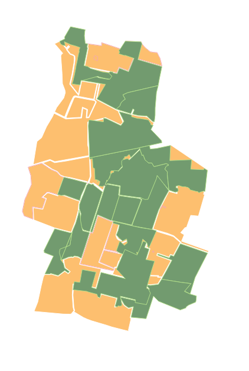
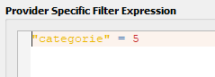
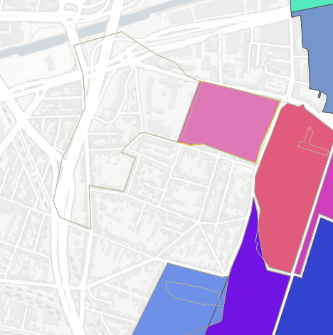
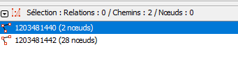
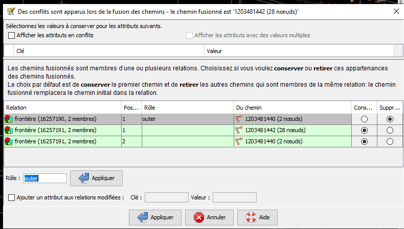
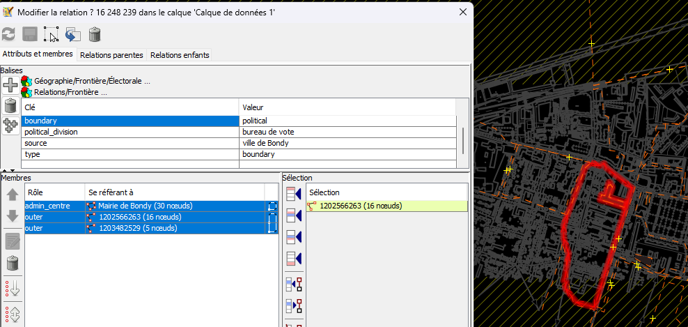
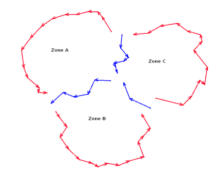

Objectif
Les étudiants de 2023 ont travaillé sur les bureaux de vote. L’idée est de repartir de leur travail pour montrer la nécessité du cercle vertueux.

Le zonage en bureau de vote permettra ensuite aux étudiants de travailler sur une portion restreinte du territoire.
CARTE 2 : superposition des deux données
Les données : opendata et OSM
Lister les modifications à faire dans OSM
Dans le tableur, noter les modifications et attribuer aux étudiants la tâche sous JOSM
Code
anomalie <- read.csv("data/anomalieBV.csv", fileEncoding = "UTF-8")
knitr::kable(anomalie)
| 2 |
géométrie |
à redessiner |
NA |
| 20 |
géométrie |
fusionner les 2 lignes |
NA |
| 23 |
attribut |
tag political divison ou pollilng station |
NA |
| ts les bureaux |
attribut |
manque le num bureau |
NA |
Attributs
observer les attributs, repérer les erreurs d’attributs
Géométries
observer les géométries et noter les bureaux manquants ou incomplets (notamment polygone non fermés)
utiliser les outils identification / sélection / loupe attributaire
Saisie dans JOSM
Répétition de la séquence d’initiation
voir ici
Saisie avancée, quelques points
Filtre
le wiki
Détailler le fonctionnement.
 Il s’agit de travailler uniquement sur les contours des bureaux de vote.
Rassembler 2 lignes
Pourquoi ce polygone est une polyligne ?
Analyse dans Qgis
Utiliser l’outil de sélection, d’identification, la loupe attributaire
 Il faut unir les deux chemins ou plutôt superposer les noeuds.
Réparer dans JOSM
On les sélectionne les 2 géométries
 Bien vérifier dans la fenêtre sélection c pour fusionner

Couper une ligne
sélectionner les 2 noeuds puis outil / couper le chemin
Comprendre une relation
Remarquer 2 outer et l’ admin_centre .
 Principe d’une relation

Partage des zones
carte umap
Chaque étudiant remplace le prénom en fonction des bureaux attribués dans le framacalc (1 à 32)